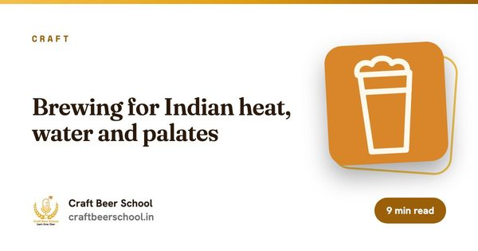

ഫോർമാറ്റ്ഓൺലൈൻ + നേരിട്ട്
ദൈർഘ്യം4 ആഴ്ച
സെഷനുകൾ8 ലൈവ് ക്ലാസുകൾ, ഓരോന്നും 2 മണിക്കൂർ
ബാച്ച്പരമാവധി 20
ഫീസ്₹5,999

ആർക്കുവേണ്ടി
ഇത് നിങ്ങൾക്കുള്ളതാണോ?
- ഒരു ബാച്ച് നന്നായി വന്നു എന്ന് മാത്രമല്ല, എന്തുകൊണ്ട് എന്നും അറിയാൻ ആഗ്രഹിക്കുന്ന ഹോംബ്രൂവർമാർ
- ആദ്യത്തെ ശരിയായ recipe brew ചെയ്യാൻ തയ്യാറായ beer പ്രേമികൾ
- ദിവസവും ബിയറിനെക്കുറിച്ച് സംസാരിക്കുന്ന ഹോസ്പിറ്റാലിറ്റി, സെയിൽസ് ജീവനക്കാർ
അവസാനമാകുമ്പോഴേക്കും
നിങ്ങൾ കൊണ്ടുപോകുന്നത്.
- mill മുതൽ package വരെ ഓരോ ഘട്ടവും വിശദീകരിക്കാം
- ലക്ഷ്യമിട്ട OG, IBU, നിറം എന്നിവയോടെ ഒരു 20 L റെസിപ്പി ഉണ്ടാക്കൂ
- ഒരു പ്രൊഫഷണൽ brewery പോലെ ക്ലീൻ ചെയ്യൂ, sanitise ചെയ്യൂ
- നിങ്ങളുടെ സ്വന്തം gravity റീഡിംഗുകളിൽ നിന്ന് ABV കണക്കാക്കാം
നിങ്ങളുടെ ഇൻസ്ട്രക്ടറും ബന്ധപ്പെടേണ്ട ആളും
ഈ കോഴ്സ് ആരാണ് പഠിപ്പിക്കുന്നത്, ആരോട് ചോദിക്കണം.

ബന്ധപ്പെടേണ്ട വ്യക്തി
Chatty Girija
ബിയർ പോഡ്കാസ്റ്റർ · ക്രിയേറ്റീവ് സ്ട്രാറ്റജിസ്റ്റ്
Chatty-ക്ക് WhatsApp ചെയ്യൂസിലബസ്
ആഴ്ച തോറും.
4 ആഴ്ച. എല്ലാ വീക്കെൻഡിലും രണ്ട് ലൈവ് സെഷനുകൾ, ആഴ്ചയിൽ ഒരു അസൈൻമെന്റ്.
ആഴ്ച 01. ധാന്യം മുതൽ ഗ്ലാസ് വരെ
- നാല് ചേരുവകളും ഓരോന്നും എന്ത് ചെയ്യുന്നു എന്നതും
- Brewhouse മാപ്പ്: mill, mash, lauter, boil, whirlpool, ferment, condition, package
- ഒരു ലേബൽ വായിക്കൽ: ABV, IBU, നിറം (EBC, SRM)
അസൈൻമെന്റ്: മൂന്ന് കൊമേഴ്സ്യൽ beers രുചിച്ചുനോക്കി ഓരോന്നിനെയും അതിന്റെ ചേരുവകളിലേക്ക് പിന്തുടരുക.
ആഴ്ച 02. Malt, വെള്ളം, mash
- Malting: കുതിർക്കൽ, മുളപ്പിക്കൽ, kiln
- Base malts-ഉം speciality malts-ഉം തമ്മിൽ
- Enzymes-ഉം mash താപനിലയും: കൂടുതൽ dry ആയ beer-ന് 62 മുതൽ 65 °C, കൂടുതൽ body-ക്ക് 68 മുതൽ 70 °C
- വെള്ളത്തിന്റെ അടിസ്ഥാനങ്ങളും mash pH 5.2 മുതൽ 5.6 വരെ ആയിരിക്കേണ്ടത് എന്തുകൊണ്ടെന്നും
അസൈൻമെന്റ്: 20 L ബാച്ചിനുള്ള grist-ഉം strike water-ഉം കണക്കാക്കൂ.
ആഴ്ച 03. Hops, boil, yeast
- Alpha acids-ഉം അവ കയ്പ്പാകാൻ boil വേണ്ടത് എന്തുകൊണ്ടെന്നും
- Bittering, aroma, dry hop additions
- boil എന്താണ് ചെയ്യുന്നത്: അണുവിമുക്തമാക്കൽ, isomerise ചെയ്യൽ, DMS പുറത്തുകളയൽ, hot break ഉണ്ടാക്കൽ
- Ale, lager yeast വ്യത്യാസം, pitch rates, താപനില നിയന്ത്രണം
അസൈൻമെന്റ്: നിങ്ങളുടെ recipe-യുടെ IBU കണക്കാക്കൂ.
ആഴ്ച 04. ശുചിത്വം, ഉപകരണങ്ങൾ, നിങ്ങളുടെ ആദ്യ റെസിപ്പി
- ക്ലീനിങ്ങും സാനിറ്റൈസിങ്ങും തമ്മിലുള്ള വ്യത്യാസവും ഓരോന്നിനുമുള്ള കെമിക്കലുകളും
- Homebrew കിറ്റും മൈക്രോബ്രൂവറി brewhouse-ഉം തമ്മിൽ
- Original gravity-യും final gravity-യും, ഒപ്പം ABV = (OG - FG) x 131.25
- Priming, carbonation, packaging
അസൈൻമെന്റ്: നിങ്ങളുടെ ആദ്യത്തെ പൂർണ്ണ recipe ബാച്ചിന് മുന്നിൽ അവതരിപ്പിക്കൂ.
ഇത് എങ്ങനെ നടക്കുന്നു
ഫോർമാറ്റും നിബന്ധനകളും.
- ഷെഡ്യൂൾ
- ശനി, ഞായർ ദിവസങ്ങളിൽ ലൈവ്, ഉച്ചയ്ക്ക് 12:00 PM മുതൽ 2:00 PM IST വരെ. ബാച്ചിന്റെ പരസ്പര സമ്മതത്തോടെ സമയം മാറ്റാം.
- ബാച്ച് വലുപ്പം
- പരമാവധി 20 വിദ്യാർത്ഥികൾ, അതുകൊണ്ട് എല്ലാ ചോദ്യത്തിനും ഉത്തരം കിട്ടും.
- ഉൾപ്പെടുന്നു
- സെഷൻ റെക്കോർഡിംഗുകൾ, പ്രസന്റേഷൻ ഡെക്കുകൾ, ആഴ്ചതോറുമുള്ള അസൈൻമെന്റുകൾ, ലേണിംഗ് കിറ്റ്.
- സർട്ടിഫിക്കറ്റ്
- എല്ലാ അസൈൻമെന്റുകളും സമർപ്പിക്കുകയും കുറഞ്ഞത് 80% ലൈവ് സെഷനുകളിൽ പങ്കെടുക്കുകയും ചെയ്താൽ Certificate of Completion.
- സ്ക്രീനിന് അപ്പുറം
- നിങ്ങൾ പഠിക്കുന്ന ഉപകരണങ്ങൾ നേരിൽ കാണാൻ ശുപാർശ ചെയ്യുന്ന മൈക്രോബ്രൂവറി സന്ദർശനങ്ങൾ.
- ഫീസ്
- സൈൻ അപ്പ് ചെയ്യുമ്പോൾ മുഴുവൻ തുകയും അടയ്ക്കണം. ഡിസ്കൗണ്ടുകൾ ബാധകമല്ല. ഉറപ്പിച്ച ശേഷം കോഴ്സ് പാക്കേജ് മാറ്റാനാവില്ല.
മുഴുവൻ ഫ്ലൈറ്റ് വേണോ? 29 കോഴ്സുകളും ചേർന്ന് 75 ആഴ്ച വരും. എൻറോൾ ചെയ്യുമ്പോൾ നിങ്ങളുടെ പാക്കേജ് തിരഞ്ഞെടുക്കാം. പണം അടയ്ക്കുന്നതിന് മുമ്പ് 29 കോഴ്സുകളും താരതമ്യം ചെയ്ത് റീഫണ്ട് നയം വായിക്കുക.
വായന തുടരൂ
തുടങ്ങുന്നതിന് മുമ്പ് വായിക്കൂ

കരിയർ
ഇന്ത്യയിൽ എങ്ങനെ ഒരു brewer ആകാം
ഇതൊരു ശാസ്ത്ര അടിത്തറയും അതിരാവിലത്തെ അലാറവുമുള്ള പ്രൊഡക്ഷൻ ജോലിയാണ്. അതിലേക്കുള്ള സത്യസന്ധമായ വഴി ഇതാ.

ഇവിടെ തുടങ്ങൂ
ശരിക്കും craft beer എന്താണ്?
നാല് ചേരുവകൾ, ഒരു പ്രക്രിയ, ഒത്തിരി മാർക്കറ്റിങ് ബഹളം. ആ വാക്കിന്റെ യഥാർത്ഥ അർത്ഥം ഇതാ.

ക്രാഫ്റ്റ്
ഇന്ത്യൻ ചൂടിനും വെള്ളത്തിനും രുചികൾക്കും വേണ്ടിയുള്ള brewing
മ്യൂണിക്കിൽ ശരിയാകുന്ന ഒരു recipe ഇന്ത്യയിലെ മെയ് മാസത്തിൽ തനിയെ ശരിയാകണമെന്നില്ല. മാറുന്ന ഘടകങ്ങൾ അറിഞ്ഞിരിക്കുന്നത് നല്ലതാണ്.
വായിക്കാൻ ശുപാർശ ചെയ്യുന്നത്
ഈ കോഴ്സിനുള്ള എല്ലാ ഗൈഡുകളും.
ഈ കോഴ്സ് ഉൾക്കൊള്ളുന്ന വിഷയങ്ങളിൽ 242 സൗജന്യ ഗൈഡുകൾ. ആദ്യ സെഷന് മുമ്പ് ഇവയിൽ ഏതും വായിക്കാം.
റഫറൻസ്: Brewing yeast strains ഗൈഡ് · Brewing malt ഗൈഡ് · Hop ഇനങ്ങളുടെ ഗൈഡ്
ബ്രൂവിങ് അടിസ്ഥാനങ്ങൾ 135
- ചൂടുള്ള കാലാവസ്ഥയിൽ പതഞ്ഞൊഴുകാതെ ബോട്ടിൽ കണ്ടീഷനിങ്
- വൈദ്യുതി മുടക്കവും ഗ്യാസ് ക്ഷാമവും കണക്കിലെടുത്ത് ബ്രൂ ഡേ ആസൂത്രണം
- ചൂടുള്ള കാലാവസ്ഥയിൽ വൃത്തിയുള്ള പെയിൽ ഏൽ ഉണ്ടാക്കാം
- ഉഷ്ണമേഖലാ പഴങ്ങൾ ഉപയോഗിച്ച് ബ്രൂവിങ്: മാങ്ങ, പാഷൻ ഫ്രൂട്ട്, പൈനാപ്പിൾ
- ബ്രൂവിങ് റെസിപ്പികൾ മെട്രിക്, യുഎസ് യൂണിറ്റുകൾക്കിടയിൽ മാറ്റാം
- ലളിതമായ സ്പ്രെഡ്ഷീറ്റ് ഉപയോഗിച്ച് ആദ്യത്തെ ബിയർ റെസിപ്പി ഡിസൈൻ ചെയ്യാം
- ചൂടുള്ള കാലാവസ്ഥയിൽ ഹോംബ്രൂവിങ്: നിലവറയില്ലാതെ ഫെർമെന്റേഷൻ തണുപ്പിച്ച് നിർത്താം
- ചെറിയ അപ്പാർട്ട്മെന്റിൽ ഹോംബ്രൂവിങ്: പ്രവർത്തിക്കുന്ന ചെറിയ ബാച്ച് സെറ്റപ്പ്
- സിംഗപ്പൂരിലും മലേഷ്യയിലും ഹോംബ്രൂവിങ്: ചൂട്, ഈർപ്പം, ചേരുവകൾ
- ഈർപ്പമുള്ള ഉഷ്ണമേഖലയിൽ ഹോംബ്രൂവിങ്: പൂപ്പൽ, മാൾട്ട് സംഭരണം, ശുചിത്വം
- എവിടെ നിന്നും ഓൺലൈനായി ബ്രൂവിങ് പഠിക്കാം: ലൈവ് കോഴ്സ് നിങ്ങൾക്ക് എന്ത് നൽകും
- ബിയറിനെ മാറ്റാതെ ഹോംബ്രൂ റെസിപ്പി കൂട്ടാനും കുറയ്ക്കാനും
- Original gravity തെറ്റുമ്പോൾ recipe ക്രമീകരിക്കുന്നത്
- വീട്ടിൽ wort-ൽ ഓക്സിജൻ ചേർക്കുന്നത്: കുലുക്കിയോ, തെറിപ്പിച്ചോ, ശുദ്ധ ഓക്സിജൻ കൊണ്ടോ
- Foam ഇല്ലാതെ ബിയർ ഒഴുകാൻ വീട്ടിലെ kegerator ബാലൻസ് ചെയ്യുന്നത്
- ഹോംബ്രൂ kettle-ലെ ball valve, thermometer, sight glass
- വീട്ടിൽ batch sparging-ഉം fly sparging-ഉം
- Bottling wand ഉപയോഗിച്ച് fermenter-ൽ നിന്ന് നേരിട്ട് bottle ചെയ്യുന്നത്
- എന്ത് മാറി എന്ന് പഠിക്കാൻ ഒരേ recipe രണ്ടുതവണ brew ചെയ്യുന്നത്
- ഒരു brew day-യിൽ തുടർച്ചയായി രണ്ട് batch brew ചെയ്യുന്നത്
- പരമാവധി നാല് malt-കൾ കൊണ്ട് പുതിയൊരു ഹോംബ്രൂ recipe ഉണ്ടാക്കുന്നത്
- ഇന്ത്യയിൽ ഓൺലൈനായി ഹോംബ്രൂ ചേരുവകൾ വാങ്ങുന്നതും പുതുമ പരിശോധിക്കുന്നതും
- Carbonation drops-ഉം batch priming-ഉം
- ഉണ്ടാക്കാനുദ്ദേശിക്കുന്ന batch-ന് kettle വലുപ്പം തിരഞ്ഞെടുക്കുന്നത്
- വീട്ടിലെ kegerator-ലെ beer line-കൾ വൃത്തിയാക്കുന്നത്
- Suck-back ഇല്ലാതെ വീട്ടിലെ ഫ്രിഡ്ജിൽ cold crash ചെയ്യുന്നത്
- സാധാരണ ഹോംബ്രൂ അണുബാധകളും അവ എങ്ങനെയിരിക്കും എന്നതും
- Chest freezer-നെ fermentation chamber ആക്കി മാറ്റുന്നത്
- ടാപ്പ് വെള്ളം ചൂടായിരിക്കുമ്പോൾ immersion chiller ഉപയോഗിച്ച് wort തണുപ്പിക്കുന്നത്
- Oxidise ആകാതെ ഹോംബ്രൂ dry hop ചെയ്യുന്നത്
- കഴിവുകൾ പഠിപ്പിക്കുന്ന ക്രമത്തിൽ അഞ്ച് ആദ്യ ഹോംബ്രൂ recipe-കൾ
- Set and forget രീതിയിൽ ഹോംബ്രൂ keg force carbonate ചെയ്യുന്നത്
- Bottle-conditioned കൊമേഴ്സ്യൽ ബിയറിൽ നിന്ന് yeast harvest ചെയ്യുന്നത്
- കൈയിലുള്ള അടുക്കള സാധനങ്ങൾ കൊണ്ട് കുറഞ്ഞ ചെലവിൽ ഹോംബ്രൂയിങ്
- ചെറിയ kettle-ൽ hop spider-ഓ hop bag-ഓ അയഞ്ഞ pellet-ഓ
- ഹോംബ്രൂ മങ്ങിത്തുടങ്ങുന്നതിന് മുമ്പ് എത്ര നാൾ നിൽക്കും
- 20 ലിറ്റർ ഹോംബ്രൂ batch-ൽ എത്ര yeast pitch ചെയ്യണം
- Pitch ചെയ്ത ശേഷമുള്ള lag time-ഉം എപ്പോൾ ആശങ്കപ്പെടണം എന്നതും
- ഹോംബ്രൂ recipe-യിലെ mash schedule മനസ്സിലാക്കുന്നത്
- Mash out-ഉം ചില ഹോംബ്രൂവർമാർ അത് ഒഴിവാക്കുന്നതിന്റെ കാരണവും
- No-chill brewing-ഉം അത് യുക്തമാകുന്ന സന്ദർഭങ്ങളും
- Pellicle, പൂപ്പൽ, ഒരു batch എപ്പോൾ കളയണം എന്നതും
- Yeast ഇല്ലാതെ bottle-conditioned ഹോംബ്രൂ ഒഴിക്കുന്നത്
- Brew day-യിൽ refractometer വായിക്കുന്നത്
- ഒന്നും വിട്ടുപോകാതെ അമ്പത് കുപ്പികൾ വേഗത്തിൽ sanitise ചെയ്യുന്നത്
- Secondary fermentation-ഉം മിക്ക ഹോംബ്രൂവർമാരും ഇപ്പോൾ അത് ചെയ്യാത്തതിന്റെ കാരണവും
- വാടക ഫ്ലാറ്റിൽ ഒരു fermentation കോർണർ ഒരുക്കുന്നത്
- കുറുക്കുവഴികളില്ലാതെ brew day നാല് മണിക്കൂറായി ചുരുക്കുന്നത്
- ഹോംബ്രൂവിന് mini keg സെറ്റപ്പിൽ തുടങ്ങുന്നത്
- Boil-over തടയുന്നതും വീണ്ടും സംഭവിക്കാതെ നോക്കുന്നതും
- ഇന്ത്യൻ ചൂടിൽ കുപ്പിയിലാക്കിയ ഹോംബ്രൂ സൂക്ഷിക്കുന്നത്
- Brew day-കൾക്കിടയിൽ ബാക്കി വന്ന hops-ഉം malt-ഉം സൂക്ഷിക്കുന്നത്
- Batch-ൽ അണുബാധ വരുത്താതെ gravity സാമ്പിൾ എടുക്കുന്നത്
- ലക്ഷ്യ gravity എത്താൻ വെള്ളം ചേർത്ത് നിറയ്ക്കുന്നത്
- ഫ്രിഡ്ജില്ലാതെ fermentation തണുപ്പിച്ച് നിർത്താൻ swamp cooler ഉപയോഗിക്കുന്നത്
- ഹോംബ്രൂ തെളിയിക്കാൻ gelatine ഉപയോഗിക്കുന്നത്
- കൂടുതൽ തെളിഞ്ഞ ഹോംബ്രൂവിന് Irish moss-ഉം kettle finings-ഉം
- Water report ഇല്ലാതെ ആദ്യ all-grain brew-നുള്ള വെള്ളം
- Blow-off tube എന്ത് ചെയ്യുന്നു, എപ്പോൾ വേണം
- ഹോംബ്രൂ കുപ്പികൾ പതഞ്ഞുപൊങ്ങുന്നതിന്റെ കാരണവും bottle bomb ഒഴിവാക്കുന്ന വിധവും
- ഓരോ brew-വിലും efficiency മാറുന്നതിന്റെ കാരണം
- Fermentation ഫ്രിഡ്ജിന് plug-in temperature controller വയർ ചെയ്യുന്നത്
- ഒന്നും തിടുക്കത്തിലാകാതിരിക്കാൻ brew day ടൈംലൈൻ എഴുതുന്നത്
- Homebrewers-നായി bottling day ചെക്ക്ലിസ്റ്റ്
- 10 ലിറ്റർ homebrew batch-ന് ആദ്യത്തെ pale ale recipe
- ബ്രൂ ഡേ കഴിഞ്ഞുള്ള മണിക്കൂറുകളിലേക്ക് ലളിതമായ ഒരു ക്ലീനിങ് ദിനചര്യ
- ഇലക്ട്രിക് all-in-one brewing systems പണത്തിന് മൂല്യമുള്ളതാണോ?
- ഫ്രഷ് ഇഞ്ചി ഉപയോഗിച്ച് വീട്ടിൽ പതയുന്ന ഒരു ജിഞ്ചർ beer ബ്രൂ ചെയ്യാം
- ഇന്ത്യൻ തേൻ ഉപയോഗിച്ച് വീട്ടിൽ ഒരു honey ale ബ്രൂ ചെയ്യാം
- cellar ഇല്ലാതെ വീട്ടിൽ ഒരു lager brew ചെയ്യൽ
- മാമ്പഴക്കാലത്ത് വീട്ടിൽ ഒരു മാംഗോ wheat beer ബ്രൂ ചെയ്യാം
- ഇന്ത്യൻ അരി ഉപയോഗിച്ച് വീട്ടിൽ ഒരു rice lager ഉണ്ടാക്കുന്നത്
- 4 ശതമാനത്തിൽ താഴെ, എന്നാൽ ഫ്ലേവർ ഉള്ള ഒരു session beer ഉണ്ടാക്കുന്നത്
- നിങ്ങളുടെ ചേരുവകളെ അറിയാൻ ഒരു single malt single hop beer ബ്രൂ ചെയ്യാം
- വീട്ടിൽ ഒരു stout ബ്രൂ ചെയ്യൽ
- വീട്ടിൽ ഒരു wheat beer ബ്രൂ ചെയ്യാം
- ഇന്ത്യൻ അടുക്കളയിൽ ഇൻഡക്ഷൻ സ്റ്റൗവിൽ ബ്രൂ ചെയ്യാം
- കൂട്ടുകാരനോടൊപ്പം ആദ്യ beer ഉണ്ടാക്കുന്നത്: കിറ്റ്, ചെലവ്, ജോലി വിഭജനം
- All-grain brewing-നായി cooler box mash tun ഉണ്ടാക്കുന്നത്
- ബ്രൂ ഡേയിൽ ഉപയോഗിക്കുന്ന തെർമോമീറ്റർ കാലിബ്രേറ്റ് ചെയ്യാം
- ഇന്ത്യയിൽ homebrew-ന് കുപ്പികളും crown caps-ഓ swing tops-ഓ തിരഞ്ഞെടുക്കുന്നത്
- നിങ്ങളുടെ homebrew-ന് പഴയ beer കുപ്പികൾ വൃത്തിയാക്കി വീണ്ടും ഉപയോഗിക്കാം
- Beer-ൽ നിന്ന് ഓക്സിജൻ അകറ്റി നിർത്താൻ വീട്ടിൽ closed transfers
- നിങ്ങളുടെ ആദ്യ IPA റെസിപ്പി ഡിസൈൻ ചെയ്യാം
- നിങ്ങളുടെ ആദ്യ homebrew മത്സരത്തിൽ പങ്കെടുക്കുമ്പോൾ
- ഇരുണ്ട, പുളിച്ച ചുവയുള്ള beer ഇല്ലാതെ malt extract-ൽ നിന്ന് മികച്ചത് നേടാം
- ഈർപ്പം കൂടുതലുള്ള മൺസൂൺ കാലത്ത് homebrewing
- നിങ്ങൾക്ക് ഇഷ്ടമുള്ള ഒരു ബിയറിന്റെ clone ഗവേഷണം ചെയ്ത് ബ്രൂ ചെയ്യുന്നത് എങ്ങനെ
- പുതിയ brewers-നായി krausen, trub, yeast cake എന്നിവ
- ഒന്നും നഷ്ടപ്പെടാതിരിക്കാൻ homebrew കുപ്പികളിൽ ലേബലും തീയതിയും ഇടാം
- പാക്ക് ചെയ്ത ആപ്പിൾ ജ്യൂസിൽ നിന്ന് വീട്ടിൽ നിങ്ങളുടെ ആദ്യ cider ഉണ്ടാക്കാം
- വീട്ടിൽ grain mill ചെയ്യുന്നതും crush ശരിയാക്കുന്നതും
- Extract-നും all-grain-നും ഇടയിലുള്ള പടിയായി partial mash brewing
- ഹൗസ് പാർട്ടിക്കായി ഒരു ബാച്ച് homebrew പ്ലാൻ ചെയ്യുന്നത്
- Homebrew-ന് പ്ലാസ്റ്റിക് ബക്കറ്റോ ഗ്ലാസ് carboy-ഓ stainless fermenter-ഓ
- Plato-യോ specific gravity-യോ: homebrewers ഏത് സ്കെയിൽ ഉപയോഗിക്കണം
- ആദ്യത്തെ കുറച്ച് brew-കൾക്ക് recipe kit-ഓ സ്വന്തം recipe-യോ
- ചെറിയ ബാച്ച് ബ്രൂവിങ്: 3 മുതൽ 5 ലിറ്റർ വരെ
- നിങ്ങളുടെ നഗരത്തിൽ ഒരു homebrew club തുടങ്ങി നിലനിർത്തുന്നത്
- Recipe-യിലെ hop ഇനം സ്റ്റോക്കില്ലാത്തപ്പോൾ പകരം hops ഉപയോഗിക്കുന്നത്
- Starter kit-ൽ നിന്ന് മുഴുവൻ all-grain ഉപകരണങ്ങളിലേക്ക് മാറുന്നത്
- Airlock കുമിളകൾ നിങ്ങളോട് പറയുന്നതും പറയാത്തതും
- ഇന്ത്യയിൽ homebrewing-ന് ഒരു ലിറ്റർ beer-ന് ശരിക്കും എത്ര ചെലവാകും
- കയ്പ്പിനും ഫ്ലേവറിനും മണത്തിനും വേണ്ടി hops എപ്പോൾ ചേർക്കണം
- ഇന്ത്യയിൽ homebrewing-ന് ഏത് സാനിറ്റൈസർ വാങ്ങണം, എന്തുകൊണ്ട്
- നിങ്ങളുടെ ആദ്യ homebrew നേർത്തതോ അൽപം cider പോലെയോ രുചിക്കുന്നത് എന്തുകൊണ്ട്
- ഒരു homebrew batch-ന് എത്ര വെള്ളം വേണമെന്ന് കണക്കാക്കാം
- നിങ്ങളുടെ ആദ്യ lager-ഉം ആദ്യ ale-ഉം, ആദ്യം ഏത് ബ്രൂ ചെയ്യണം
- നിങ്ങളുടെ ആദ്യ all-grain brew day, മണിക്കൂർ തിരിച്ച്
- അങ്കുർ നാപയോടൊപ്പം ബ്രൂയിങ് പഠിക്കാം: YouTube-ലെ അദ്ദേഹത്തിന്റെ പാഠങ്ങൾ
- ഒരു ചെറിയ ഇന്ത്യൻ അപ്പാർട്ട്മെന്റിൽ brewing
- ശരിക്കും ഉപകാരപ്പെടുന്ന ഒരു brew log സൂക്ഷിക്കൽ
- ഉപയോഗിക്കാൻ കൊള്ളാവുന്ന ബ്രൂവിങ് സോഫ്റ്റ്വെയറുകളും കാൽക്കുലേറ്ററുകളും
- ഒരു beer recipe എങ്ങനെ വലുതാക്കാം അല്ലെങ്കിൽ ചെറുതാക്കാം
- ഒരു ബിയർ റെസിപ്പി എങ്ങനെ വായിക്കാം
- beer style അനുസരിച്ചുള്ള carbonation നിലകൾ
- നിങ്ങളുടെ ഹോംബ്രൂ keg ചെയ്യാം
- Bottle conditioning, priming sugar
- ബിയർ ferment ആകാൻ എത്ര സമയമെടുക്കും?
- വീട്ടിൽ fermentation താപനില നിയന്ത്രിക്കൽ
- yeast ശരിയായി pitch ചെയ്യുന്നത്
- Wort വേഗത്തിൽ തണുപ്പിക്കുന്നത് എങ്ങനെ, അത് എന്തുകൊണ്ട് പ്രധാനം
- boil സമയത്ത് ശരിക്കും എന്താണ് സംഭവിക്കുന്നത്
- Mash താപനിലയും അത് നിങ്ങളുടെ ബിയറിനോട് ചെയ്യുന്നതും
- ബിയറിന്റെ നിറം: SRM-ഉം EBC-യും ലളിതമായി
- കയ്പ്പിനെക്കുറിച്ച് IBU ശരിക്കും എന്ത് പറയുന്നു
- gravity റീഡിങ്ങിൽ നിന്ന് ABV എങ്ങനെ കണക്കാക്കാം
- Original gravity-യും final gravity-യും വിശദമായി
- Hydrometer ശരിയായി ഉപയോഗിക്കുന്നത് എങ്ങനെ
- ബ്രൂയിങ്ങിൽ ക്ലീനിങ്ങും സാനിറ്റൈസിങ്ങും തമ്മിലുള്ള വ്യത്യാസം
- മിക്കവാറും എല്ലാ ആദ്യ homebrew-വിലും സംഭവിക്കുന്ന പത്ത് തെറ്റുകൾ
- Brew in a bag, ഏറ്റവും എളുപ്പമുള്ള all-grain രീതി
- Extract അല്ലെങ്കിൽ all-grain: ഏത് വഴി തുടങ്ങണം
- ഇന്ത്യക്കായി ഒരു homebrewing സ്റ്റാർട്ടർ കിറ്റ്
- Beer എങ്ങനെ ഉണ്ടാക്കുന്നു, ഘട്ടം ഘട്ടമായി
കരിയറുകൾ 50
- ബ്രൂവിങ് ബിരുദമില്ലാതെ ബ്രൂവറാകുന്നത് എങ്ങനെ
- മുപ്പതുകളിലോ നാൽപതുകളിലോ ബ്രൂവിങ്ങിലേക്ക് കരിയർ മാറാം
- ഹോംബ്രൂവറിൽ നിന്ന് അസിസ്റ്റന്റ് ബ്രൂവറിലേക്ക്: ആദ്യ വർഷത്തെ പദ്ധതി
- മുഴുവൻ സമയ ജോലിക്കിടയിൽ ബ്രൂവിങ് പഠിക്കാം
- വിദേശത്ത് ബ്രൂവറായി ജോലി: എവിടെയും ഉപകരിക്കുന്ന കഴിവുകൾ
- ഒരു ബ്രൂവിങ് കോഴ്സ് ജോലി കിട്ടാൻ സഹായിക്കുമോ?
- ബ്രൂവർ ആകാൻ സയൻസ് പശ്ചാത്തലം വേണോ?
- ബാറിനോ റെസ്റ്റോറന്റ് ഗ്രൂപ്പിനോ വേണ്ടി beer buyer ആകുന്നത്
- ബിയർ ടൂർ ഗൈഡോ ബ്രൂവറി ഹോസ്റ്റോ ആകുന്നത്
- Tap-കൾ സ്ഥാപിക്കുകയും സർവീസ് ചെയ്യുകയും ചെയ്യുന്ന draught ടെക്നീഷ്യൻ ആകുന്നത്
- ബിയർ കമ്പനികളിലെ graduate റോളുകൾക്കുള്ള case study ഇന്റർവ്യൂകൾ
- ബിയർ കമ്പനികളിലെ customer service, പരാതി കൈകാര്യ റോളുകൾ
- ബ്രൂവർമാർക്കുള്ള HACCP, food safety പരിശീലനം
- ബിയർ കമ്പനിയിലെ ബ്രൂയിങ് അല്ലാത്ത റോളുകൾക്കുള്ള ഇന്റർവ്യൂ
- ബ്രൂയിങ് ജോലികൾക്ക് അപേക്ഷിക്കുന്നതിന് മുമ്പ് അടിസ്ഥാന microbiology പഠിക്കുന്നത്
- ജോലി ചെയ്യുന്ന ബ്രൂവർ എന്ന നിലയിൽ ഡാറ്റ കഴിവുകൾ പഠിക്കുന്നത്
- ഒരു ബ്രൂവർ നേരത്തേ പഠിക്കേണ്ട മെക്കാനിക്കൽ കഴിവുകൾ
- IT ജോലിയിൽ നിന്ന് ബിയർ കമ്പനിയിലെ റോളിലേക്ക് മാറുന്നത്
- ഓൺലൈൻ ബ്രൂയിങ് കോഴ്സുകളും ഒന്ന് മൂല്യമുള്ളതാണോ എന്ന് വിലയിരുത്തുന്ന വിധവും
- ബ്രൂവറികളിലെ packaging engineer കരിയർ
- Log-കൾക്കും costing-നും ഓരോ ബ്രൂവർക്കും വേണ്ട spreadsheet കഴിവുകൾ
- ബ്രൂവറിയിൽ health and safety ഓഫീസറായി ജോലി ചെയ്യുന്നത്
- ബ്രൂവറിയുടെ വെയർഹൗസ്, ലോജിസ്റ്റിക്സ് ടീമിൽ ജോലി ചെയ്യുന്നത്
- റിക്രൂട്ടർമാരുടെ ശ്രദ്ധയിൽ ബ്രൂവർമാരെ എത്തിക്കുന്ന LinkedIn പ്രൊഫൈൽ
- വലിയ ബ്രൂവറിയോ craft ബ്രൂവറിയോ: brewing കരിയർ എവിടെ തുടങ്ങണം
- ബ്രൂവറുടെ CV-യും ഇന്റർവ്യൂവും: ജോലി കിട്ടാൻ സഹായിക്കുന്നത് എന്ത്
- ഒരു brewing ഉപകരണ സപ്ലയറിൽ സെയിൽസ് എഞ്ചിനീയറായി ജോലി
- Brewmaster, head brewer അല്ലെങ്കിൽ പ്രൊഡക്ഷൻ മാനേജർ: പദവികൾ വിശദീകരിക്കുന്നു
- നിങ്ങളുടെ homebrew recipes-ൽ നിന്ന് ഒരു brewing portfolio ഉണ്ടാക്കാം
- Cellar, packaging ജോലികൾ: മിക്ക ബ്രൂവർമാരും തുടങ്ങുന്നത് ഇവിടെ
- വിദേശത്ത് പരിശീലനം കഴിഞ്ഞ് ഇന്ത്യയിൽ brew ചെയ്യാൻ തിരിച്ചെത്തുമ്പോൾ
- ഇപ്പോഴത്തെ ജോലി നിലനിർത്തിക്കൊണ്ട് പ്രൊഫഷണലായി brewing പഠിക്കാം
- എഞ്ചിനീയറിങ്ങിൽ നിന്ന് brewing-ലേക്ക് മാറുമ്പോൾ ഉപകാരപ്പെടുന്ന കഴിവുകൾ
- ആദ്യത്തെ brewer ശമ്പളവും ജോയിനിങ് നിബന്ധനകളും എങ്ങനെ ചർച്ച ചെയ്യാം
- ബ്രൂവിങ് വിദേശത്തോ ഇന്ത്യയിലോ പഠിക്കണോ
- മറ്റൊരു കരിയറിൽ നിന്ന് മുപ്പതുകളിലോ നാൽപതുകളിലോ brewing-ലേക്ക് മാറുന്നത്
- Trial shift: ആദ്യ ദിവസം ഒരു brewery നിങ്ങളിൽ പരീക്ഷിക്കുന്നത്
- ഒരു head brewer ആഴ്ച മുഴുവൻ ബ്രൂവിങ്ങിന് പുറമേ ശരിക്കും എന്ത് ചെയ്യുന്നു
- ഇന്ത്യൻ ബ്രൂയിങ്ങിലെ സ്ത്രീകൾ: എങ്ങനെ കടന്നുവരാം, എങ്ങനെ മുന്നേറാം
- വിദേശത്ത് ബ്രൂവറായി ജോലി: വിസ, മാർക്കറ്റുകൾ, യോഗ്യതകൾ
- ബ്രൂവറിക്ക് പകരം ഒരു malt house-ലോ hop വിതരണക്കാരനോടൊപ്പമോ ജോലി
- ഒരു ഇന്ത്യൻ ഡിസ്റ്റിലറിയിൽ ജോലി ചെയ്യുമ്പോൾ
- ബിയറിനെക്കുറിച്ച് എഴുതി ജീവിക്കുന്നത്
- ബ്രൂവറി ക്വാളിറ്റി കൺട്രോളിൽ ഒരു കരിയർ
- Hops n Grains-ന് പിന്നിലെ brewmaster ഗഗൻ ദീപിനെ പരിചയപ്പെടാം
- ഇന്ത്യയിൽ ഒരു ബ്രൂവറി ഇന്റേൺഷിപ്പ് നേടുന്നത്
- ഒരു അസിസ്റ്റന്റ് ബ്രൂവർ ശരിക്കും എന്ത് ചെയ്യുന്നു
- ഒരു brewery-ക്കുള്ളിലെ ജോലികൾ
- Brewing ബിരുദമോ ചെറിയ കോഴ്സോ?
- ബ്രൂയിങ് സർട്ടിഫിക്കേഷനുകൾ, താരതമ്യം
ചേരുവകൾ 47
- ചോളം ഉപയോഗിച്ച് ബ്രൂവിങ്: ആഫ്രിക്കൻ വേരുകളുള്ള ഗ്ലൂട്ടൻ രഹിത ധാന്യം
- അടുത്ത് കടയില്ലാത്തപ്പോൾ ഹോംബ്രൂ ചേരുവകൾ വാങ്ങാം
- തണുപ്പിക്കാൻ കഴിയാത്ത ചൂടുള്ള മുറിക്ക് യീസ്റ്റ് തിരഞ്ഞെടുക്കാം
- ചൂടോടെ എത്തിയ ലിക്വിഡ് യീസ്റ്റ്: പിച്ച് ചെയ്യും മുമ്പ് എന്ത് ചെയ്യണം
- ചൂടുള്ള കാലാവസ്ഥയിൽ ഹോപ്സ് മണം നിലനിർത്തി സൂക്ഷിക്കാം
- beer ൽ coffee ചേർക്കൽ
- മണം നഷ്ടപ്പെടാതെ beer-ൽ ഇന്ത്യൻ തേൻ ചേർക്കുന്നത്
- ശർക്കര ചേർത്ത് ബ്രൂ ചെയ്യാം
- Millets ഉപയോഗിച്ച് brewing: beer-ൽ റാഗി, ജോവർ, ബജ്റ
- മസാല ചായ, ഗ്രീൻ ടീ beers-നായി ചായ ഇല ഉപയോഗിച്ച് brewing
- Stout-ലും porter-ലും cacao nibs: അളവ്, സമയം, sanitising
- പുതിയ aroma-യ്ക്കായി ബിയറിൽ സിട്രസ് തൊലിയും gondhoraj നാരങ്ങയും ഉപയോഗിക്കാം
- ചെറിയ hop ബജറ്റുള്ള brewpub-ന് dual purpose hops
- Bitter-കൾക്കും porter-കൾക്കുമുള്ള ഇംഗ്ലീഷ് hops, Fuggle മുതൽ Goldings വരെ
- Flaked grains താരതമ്യം: mash-ൽ oats, barley, rye, wheat
- ഇന്ത്യയിൽ food-grade brewing salts-ഉം acids-ഉം വാങ്ങുന്നത്
- ബ്രൂവറിയിലെ ധാന്യ സ്റ്റോറിൽ നിന്ന് ചെള്ളിനെയും പുഴുക്കളെയും അകറ്റി നിർത്താം
- ഇന്ത്യയിൽ hops വളരുമോ? മലനാട്ടിലെ കർഷകർ കണ്ടെത്തിയത്
- ഇന്ത്യൻ ചൂടിൽ തുറമുഖം മുതൽ brewery വരെ hops തണുപ്പിച്ച് സൂക്ഷിക്കുന്നത്
- ഇന്ത്യൻ barley ഇനങ്ങൾ നല്ല brewing malt ആക്കാൻ പറ്റുമോ
- ഇന്ത്യൻ ചൂടിൽ ജോലി ചെയ്യുന്ന brewers-നായി kveik strains താരതമ്യം
- Beer-ലെ lactose: മധുരം, ബോഡി, allergen ലേബൽ
- Liquid yeast ജീവനോടെ ഇന്ത്യയിൽ എത്തിക്കുന്നതും എത്തുമ്പോൾ പരിശോധിക്കുന്നതും
- നല്ല malt crush കിട്ടാൻ റോളർ മില്ലിന്റെ ഗ്യാപ് സെറ്റ് ചെയ്യാം
- Malt പഴകുമോ? Malt-ന്റെ ഫ്രഷ്നസും shelf life-ഉം
- Barrel ഇല്ലാതെ barrel character കിട്ടാൻ oak chips-ഉം spirals-ഉം
- ബിയറിലെ peated malt, ബ്രൂവർമാർ അത് വളരെ കുറച്ച് മാത്രം ഉപയോഗിക്കുന്നത് എന്തുകൊണ്ട്
- ഒരു hop പാക്കറ്റ് വായിക്കൽ: alpha acids, oils, വിളവെടുപ്പ് വർഷം
- Pitch ചെയ്യുന്നതിന് മുമ്പ് dry yeast ശരിയായി rehydrate ചെയ്യാം
- Brew ചെയ്യുന്നതിന് മുമ്പ് നഗരത്തിലെ വെള്ളത്തിൽ നിന്ന് chlorine-ഉം chloramine-ഉം നീക്കാം
- ഈർപ്പമുള്ള ഇന്ത്യൻ മൺസൂണിൽ malt ചാക്കുകൾ സുരക്ഷിതമായി സൂക്ഷിക്കുന്നത്
- അടുത്തുള്ള ഫ്ലോർ മില്ലിലെ malt ചെയ്യാത്ത ഇന്ത്യൻ ഗോതമ്പ് ഉപയോഗിച്ച് brewing
- Beer-ൽ വാനില: മുഴുവൻ ബീൻസോ എക്സ്ട്രാക്റ്റോ, എത്ര ഉപയോഗിക്കണം
- homebrewers ന് gypsum, calcium chloride, മറ്റ് water salts
- Yeast attenuation കണക്കുകളും അവ നിങ്ങളുടെ beer-ന് എന്ത് അർത്ഥമാക്കുന്നു എന്നതും
- Yeast flocculation, തെളിമയ്ക്ക് അത് പ്രധാനമാകുന്നത് എന്തുകൊണ്ട്
- ഇന്ത്യയിൽ പാക്കേജ്ഡ് കുടിവെള്ളം കൊണ്ട് ബ്രൂ ചെയ്യുന്നത്
- Dry yeast-ഓ liquid yeast-ഓ?
- Ale yeast-ഉം lager yeast-ഉം തമ്മിൽ
- Brewing water: അടിസ്ഥാന കാര്യങ്ങൾ
- Hop pellets വേണോ whole cone വേണോ?
- തുടക്കക്കാർക്ക് hop ഇനങ്ങൾ
- ബ്രൂവിങ്ങിലെ പഞ്ചസാരകൾ ലളിതമായി
- brewing ൽ wheat malt
- Crystal, caramel malts
- Base malts വിശദമായി
- ബാർലി എങ്ങനെ malt ആകുന്നു
ബ്രൂവിങ് സയൻസ് 8
- ഉയർന്ന പ്രദേശത്ത് ബിയർ ബ്രൂവിങ്: തിളനില, ഹോപ്സ്, ബാഷ്പീകരണം
- ചൂടുള്ള രാജ്യത്ത് ഫ്രിഡ്ജില്ലാതെ ലാഗർ ശൈലിയിലുള്ള ബിയർ പുളിപ്പിക്കാം
- Fermentation തുടങ്ങിയ ശേഷം refractometer റീഡിങ്ങുകൾ തിരുത്താം
- ഇന്ത്യൻ വേനലിൽ ferment ചെയ്യുന്നത്
- flat ആയ അല്ലെങ്കിൽ പതഞ്ഞുപൊങ്ങുന്ന homebrew: carbonation ശരിയാക്കൽ
- Hop ആസിഡുകൾ beer-നെ ബാക്ടീരിയയിൽ നിന്ന് എങ്ങനെ സംരക്ഷിക്കുന്നു
- Nitro stouts-ന് ക്രീമി head നൽകുന്നത് നൈട്രജൻ വാതകം എങ്ങനെ
- വീട്ടിൽ kettle souring
ഇൻഡസ്ട്രി അപ്ഡേറ്റ് 1
Brewing Fundamentals-ൽ നിങ്ങളുടെ സീറ്റ് ഉറപ്പാക്കൂ.
ഒരു ബാച്ചിൽ പരമാവധി 20 പേർ. ഇപ്പോൾ എൻറോൾ ചെയ്യൂ, അല്ലെങ്കിൽ WhatsApp ൽ ചോദിക്കൂ.